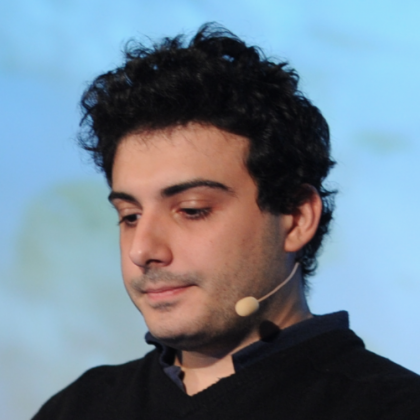

CRaSH Contributors
-
Julien Viet
Julien is passionate about open source and active in standards groups, he founded the CRaSH project the 19th of December 2009.
-

Alain Defrance
I'm an open source developer and contributed to several open source projects such as eXo Social, GateIn, CRaSH
-
Arnaud Héritier
OSS Lover, Arnaud contributes to various projects like Apache Maven, Jenkins and more recently Crash.
-
Henri Gomez
OSS activist, ASF Member, former Tomcat contributor. Dev, QA and Ops.
-
Damien Rieu
OSS developper.Fan of Java and Linux and of course CRaSH.
-
Emmanuel Hugonnet
OSS developer, I develop Silverpeas a collaborative portal solution, contribute code to various OSS projects and translate books and articles floss related.
-
David Dossot
Software Professional, Open Source Developer & Author. David contributes the Mule ESB integration to CRaSH.
-
Or Cohen
Web developer at heart, open source developer and ops consultant.